During the spring of 1996, I spent several weeks collaborating with Professor Vera Tamari in teaching art at BirZeit University. Our project provided all of us with a level of aesthetic satisfaction permeated by love of our land.
| 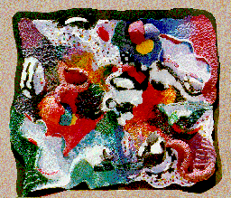 |
Student artists:
Fida AbuAlLatif Sana Alawi Yousef Samara Rowan Sharaf Fida Touma |
On the first day I told the students about my life and asked them to tell about theirs. One student told about his internment and torture in an Israeli prison. At the end of my stay with them I had occasion to visit another student in a PNA prison taking him some paper mache so that he might make-up his class-work.
| 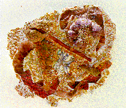 |
Student artist:
Omar Shalhoub |
Two weeks before my arrival, there had been a surprise Israeli raid on these university students during the middle of the night. They were pulled out of their beds, then made to stand for over four hours in the cold night air wearing only their bed clothes. Those from Gaza were kidnapped and sent back to Gaza without legal permission to return. This would be called a pogrom if done in Europe against Jews. It would be shocking if done in the US or in Europe; but here the Israeli Jews call it a 'security check' and the mass media seems to implicitly approve through its silence.
| 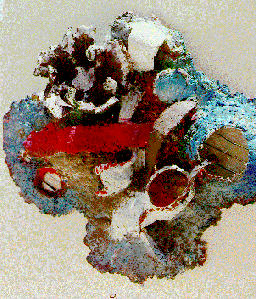 |
Student artist:
Iyhab Hadrab |
Because the Palestinian Arab society and land are under so much attack by Israel, it was important to use materials that did not pose a burden. We settled happily on paper mache. We called it majoun al-warak -- kneaded paper. And we kneaded and kneaded. The students worked in social groups and converted the work into fun.
| 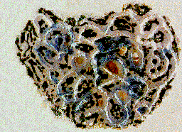 | Student artist: |
Before my arrival the students collected paper waste from all the university departments. Thus the project had an environmentally useful dimension. Vera and I discussed the project as we commuted to the university in the shared taxi called the 'service' used by students and faculty alike. One morning, squeezed between students and admiring the sight of our mountains adorned with rows of rocks, we arrived at a final definition of our project. I love the way peasants clear these stones by hand using them to terrace and divide mountain sides; and I love how they plant olive trees. It is a sight to elicits pleasurable nostalgia and simultaneously all the pain of seeing it being destroyed -- a very symbol of Palestine.
| 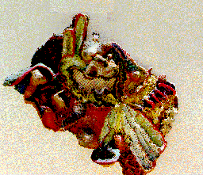 |
Student artists:
Rustum AlKhalayle Muhammad AbuRub Nina Habash Husein Sawada Samer Zabana |
I looked forward to that ride each morning and each evening. My hungry eyes opened to its beauty and my mind raced to memorize those principles which underlay such beauty. I knew that the distribution of those rock and those trees will make themselves visible in my paintings. And further lessons came when I saw them manifested in the visual expressions of our students.
| 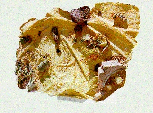 |
Student artists:
Rula AbdilRahman Nuha AbuHantash Niveen Nusseibeh Marlene Sabat |
We asked the students to look at the reality surrounding them, natural or social, then discern general principles which govern such a reality. We asked them to then apply these principles to abstract bas-relief sculptures made with paper mache. It was an extremely advanced and difficult project. When they complained or when they stumbled we threw them into the joys of kneading the squooshy paper pulp. We made them get into the work and rebuild it repeatedly until practice and discourse helped them find answers.
 |
Student artist:
Nahla Mseeh |
On afternoon as they struggled to feel out the possibilities of paper mache we suggested they use rocks as a base on which to mold this difficult material. A few hours later four of them struggled into the classroom with a enough stones for everyone. And they looked at me and said: "Miss, these are the stones of our land." They are so beautiful.
| 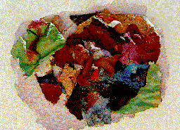 |
Student artists:
Ula Adnan Wisam Azar Nahla Mseeh Umar Shalhoub |
Each student participated in one joint project but was also responsible for three individual works. Some of the group projects dealt with the development of the Intifadah and the oppression which caused it. Some dealt with the relationship of Mediterranean sea and Palestinian land. Some dealt the seasons of the year; while some dealt with the rocks and trees surrounding the town of BirZeit.
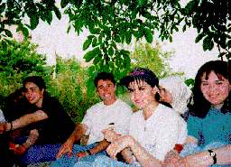
These students all get the highest grades in my professor's book. Their visual acumen is as substantial as their character. I was and still am impressed with their accomplishment and that of their teacher Vera Tamari. I look at this work and see its innate value. I take note that its genuine substance looks good even when compared to work that I have seen in the world's most sophisticated museums of modern art.
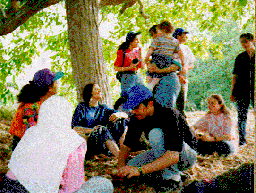
Those three weeks with them were joyful days of teaching. They are brilliant in memory. They brought a small measure of healing to the forced exile from Palestine. Other teaching days which matched them were those of teaching Asian and Pacific students at the University of Hawaii during one particular semester in 1985. Like my Hawaiian students, our Palestinian students felt that an appropriate ending to our collaboration must be an outing.
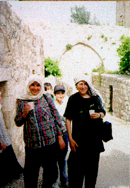
For this outing we were invited by one student to his home village of Jifna and the day was exquisite. We entered into the fabric of family relations in this one of the few remaining Palestinian villages. We were met by elders and told of how after the occupation the Israeli settlers arrived one day with a detachment of soldiers and openly stole the ancient stone carvings from within the old fortification. This fortification is in essence a tiny medieval town from which the village had grown. Our hosts also walked us through some of the ancient ruins which the villagers proudly protect while waiting for proper excavation. Later out in the surrounding fields as we strolled beneath olive trees and jumped over rock walls the students sang an old peasant song of Palestine and I felt angry regrett for all that might have been in Palestine and for all the pain that has been in Palestine.
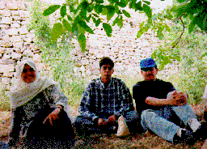
At the end we sat in a stepped field on the broken soil or on stones under the protection of a huge tree. The students sang and played games with a youthful innocence starkly contrasting the harshness of Israeli occupation on their lives. Our hosts served us drinks and sliced melon on a silver tray. I felt honored.
My Grandmother... The Town of Beisan... The Arab City of Jerusalem... Sabah Told Me... My Home in Yafa... Khader Told Me.. Olives of Palestine... Our Students... A Taxi Ride in Bethlehem... Written by Doctor Fathihe Saudi... Hasan Told Me... A Visit to Kafr Qasem... The Artist of Kafr Qasem... The Massacre at Kafr Qasem (not yet ready)
Tayseer Barakat, painter... Rana Bishara, painter and installation artist... Sari Khouri, painter... Abdel Tamam, painter... Vera Tamari, ceramist and painter... Adnan Yahya, painter and graphic artists...
{kind=link}
{kind=link}
{kind=link}
{kind=link}
{kind=link}